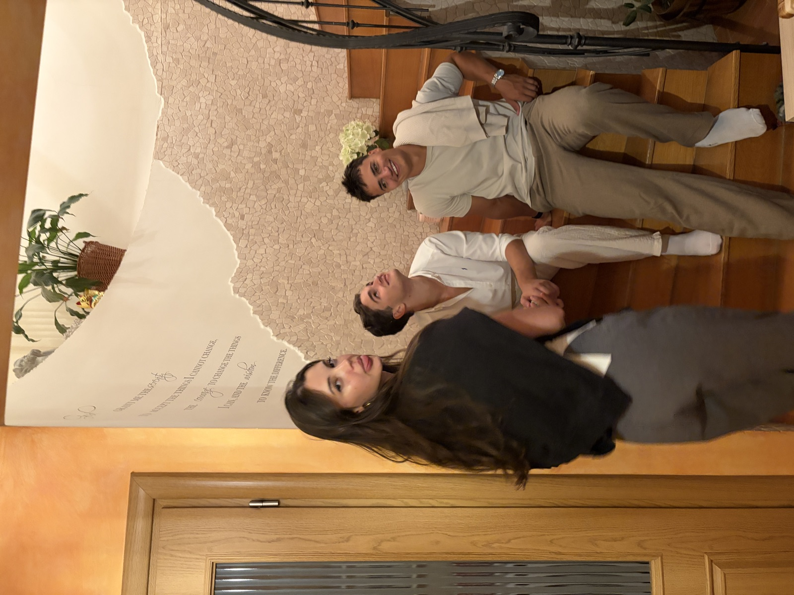
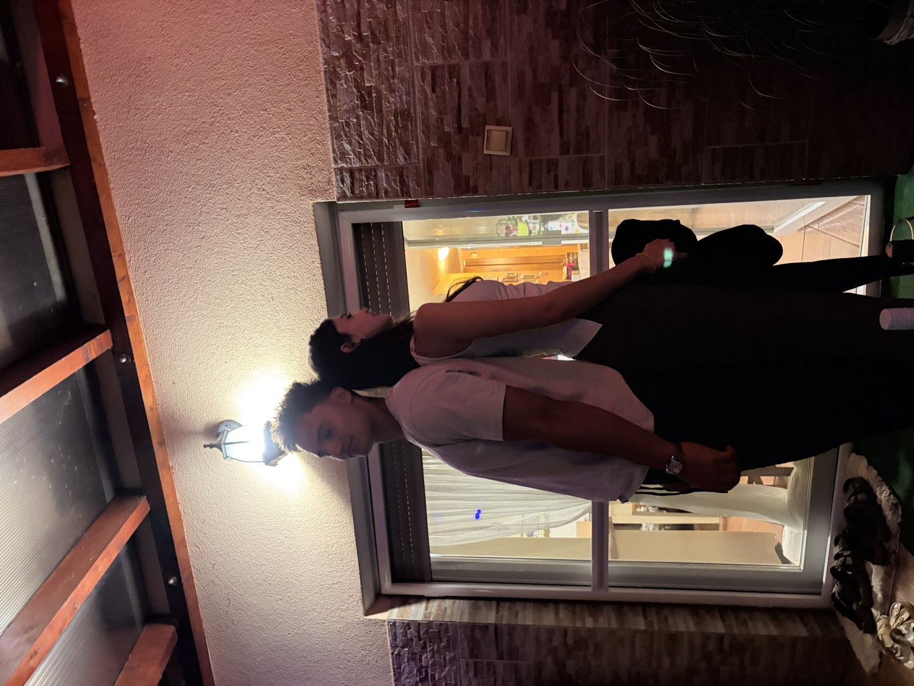
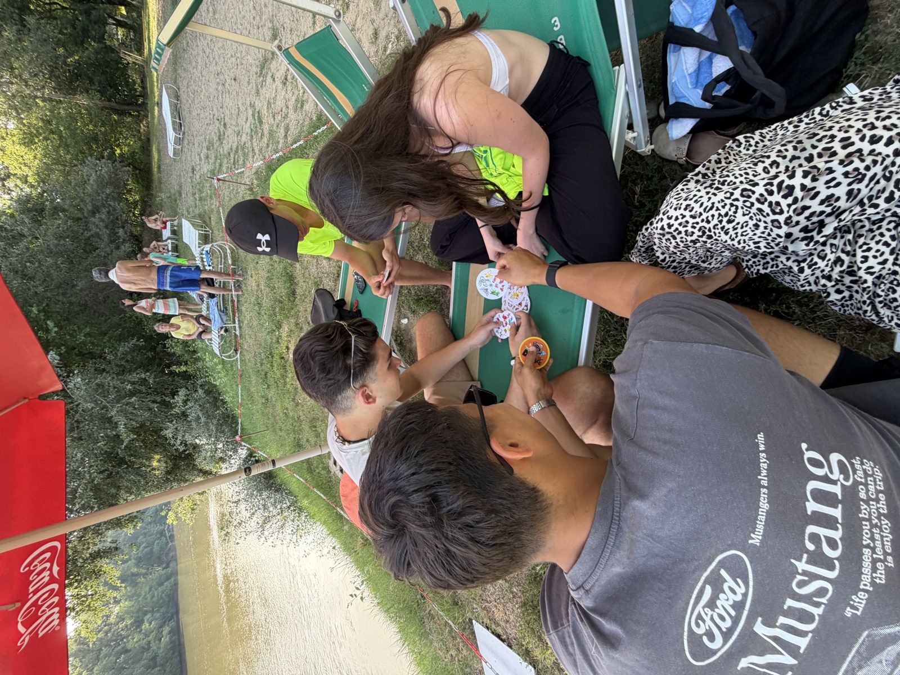
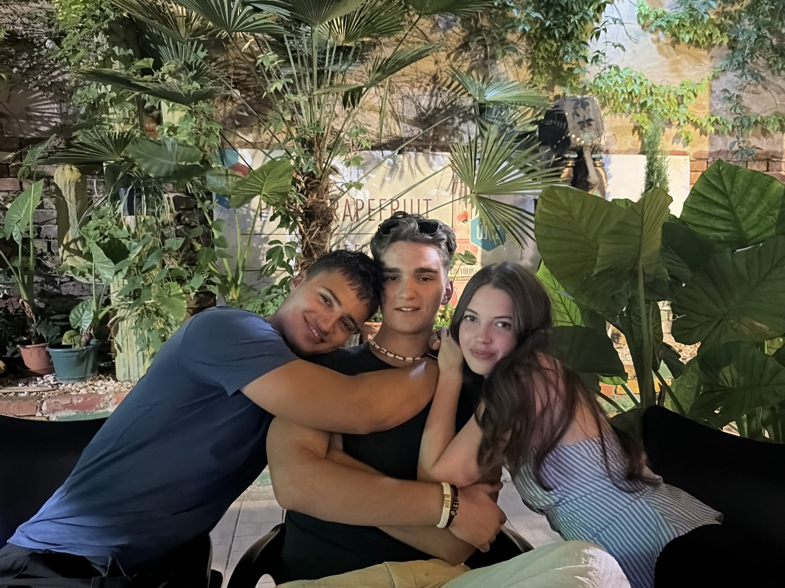
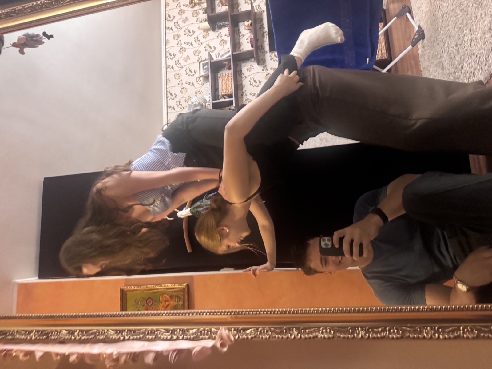
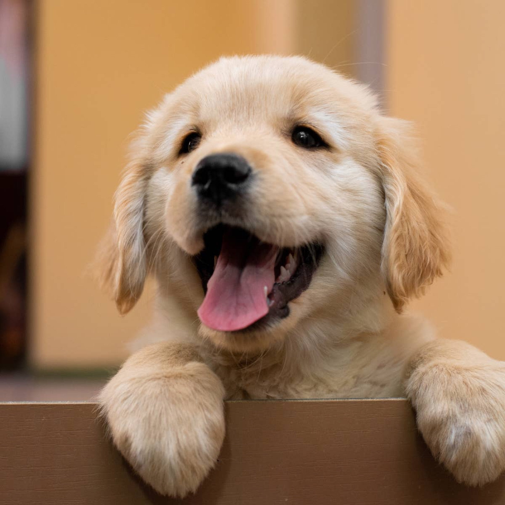

Mielőtt kérdeznék valamit…
…nézzünk vissza pár pillanatot. Görgess!

Amikor először megláttalak

Szerencsére egy pár centivel magasabb vagyok nálad

Meglátogattunk munka közben is

ezt bekereteztem ✎
Mert nagyon cuki ez a kép

Ez am nem tudom mi volt de cuki ez is

Ő is kíváncsi a válaszra
Eljönnél velem randizni?
Mielőtt válaszolsz: gondolj arra, hogy ez a kutya milyen szemekkel néz most rád. Nincs nyomás.